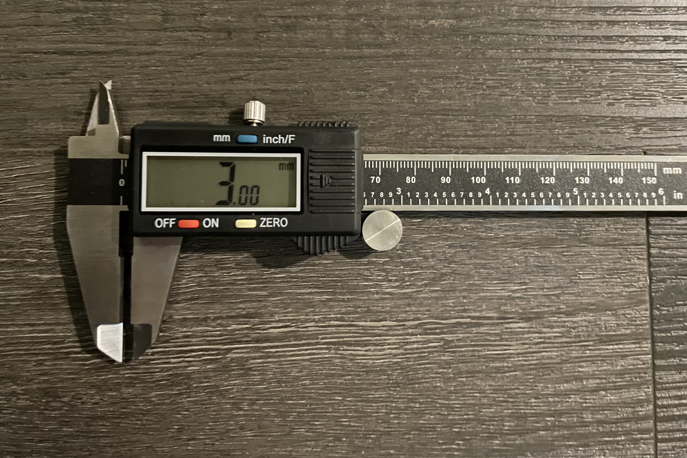

Assignment 2: Parametric Modelling with Grasshopper
By Priyana Patel

This week, we learned how to create parametric models using Grasshopper. After following the in-class tutorial led by Professor Nadya Peek and the office hours tutorial led by our TA Junchao Yang, I decided to create variations of a parametric circle and a parametric polygon.
Before creating my shapes, I knew I was going to be using the same cardboard as last time which I measured to be 3 mm in thickness. I made my slots 2 mm wide (1 mm less than the thickness) and while they fit in together, they were a bit tight. I decided to adjust the width of slots by 0.5 mm this time going forward.
  For the circle, I first created a Rectangle component which represents the slots. I specified the length and width with a number slider, connecting to the X Size and Y Size inputs. I then created a Circle component and set the Radius with a number slider. To move the slot to the center of the circle (half its width), I used the Move component and set the Geometry as the Rectangle. I then divided by the slot width with a Division component and set A as -2. I set the Result of this division as the X component of a Vector component, which set the Motion for the previous Move component. To move the slot to the edge of the circle, I took the radius and set it as the Y component of the Vector. I then placed the Subtract component between the Radius and Vector, subtracting the slot length from the circle radius, to move the slot from the outside of the circle to the inside of the circle. I made a Polar Array, setting the Geometry of the Move component and creating a number slider for the Count to specify how many slots to include along the circumference of the circle. To trim the circle with the slots, and the slots with the circle, I used two Trim with Regions components, alternating the Curve and Region inputs with the Geometry of the Polar Array and the Circle output. I then used the Join Curve component to connect the inside of the circle with the outside of the slots. Lastly, I baked my shape. I decided to create four, 5 mm by 2.5 mm slots inside my 10 mm radius circle.
For the circle, I first created a Rectangle component which represents the slots. I specified the length and width with a number slider, connecting to the X Size and Y Size inputs. I then created a Circle component and set the Radius with a number slider. To move the slot to the center of the circle (half its width), I used the Move component and set the Geometry as the Rectangle. I then divided by the slot width with a Division component and set A as -2. I set the Result of this division as the X component of a Vector component, which set the Motion for the previous Move component. To move the slot to the edge of the circle, I took the radius and set it as the Y component of the Vector. I then placed the Subtract component between the Radius and Vector, subtracting the slot length from the circle radius, to move the slot from the outside of the circle to the inside of the circle. I made a Polar Array, setting the Geometry of the Move component and creating a number slider for the Count to specify how many slots to include along the circumference of the circle. To trim the circle with the slots, and the slots with the circle, I used two Trim with Regions components, alternating the Curve and Region inputs with the Geometry of the Polar Array and the Circle output. I then used the Join Curve component to connect the inside of the circle with the outside of the slots. Lastly, I baked my shape. I decided to create four, 5 mm by 2.5 mm slots inside my 10 mm radius circle.

For the polygon, I first created a Polygon component and set the Plane using a number slider and the Radius and Segments with a number slider. I then used Deconstruct Brep to calculate the faces, edges, and vertices of the polygon. After, I added a Curve as the output of the Edges extracted the midpoint of using Curve Midpoint. I connected the Scale component to the Curve and Midpoint output to make sure that slots are at the center of the edge midpoint. To scale it to the specific slot width, I divided the width by the length of the curve with Length and Division. I used Extrude and Vector to extrude the line from the midpoint to the center of the polygon. I connected a true Boolean toggle to Unitize length and change it to 1. To change the length of the vector by the factor I want to scale, I used Amplitude and added a number slider as the Amplitude input. To move the slots slightly over the edge to assist with trimming, I scaled the slots 1 unit over with Addition. I then moved the Geometry from the center point to the midpoint and unitized to ensure the length is 1. Once the shape was ready to trim, I used Trim with Regions and Join Curve to trim and connect the inside of the polygon and the outside of the slots. Lastly, I baked my shape. I decided to create one polygon with five sides and a radius of 20 mm, and another with six sides and a radius of 20 mm. I made my slots 2.5 mm by 5 mm (the same as the ones in my circle).
Once I had my shapes baked and ready to go, I headed to the 8. I exported my Rhino files as Illustrator files and uploaded them to the laser cutter computer. Per the instructions in the makerspace, I changed the stroke thickness to 0.01 and adjusted the color to red. Under the laser settings, I put the material as mat board and altered the thickness to 2.00 mm (1 mm less than my cardboard). When I was ready to, I hit play.
With my pieces, I put together two models. The first is a flat, honeycomb-inspired model composed of 12 hexagons and 21 circle “connectors”. The second is a circular ring composed of 30 pentagons and 10 circle “connectors.” Even though the two shapes are separate, the honeycomb structure can go under the ring as a sort of stand or tray. These models are a bit different from my last assignments because the circles allow polygons to connect and “stick” together, creating a more cohesive and sleek look.